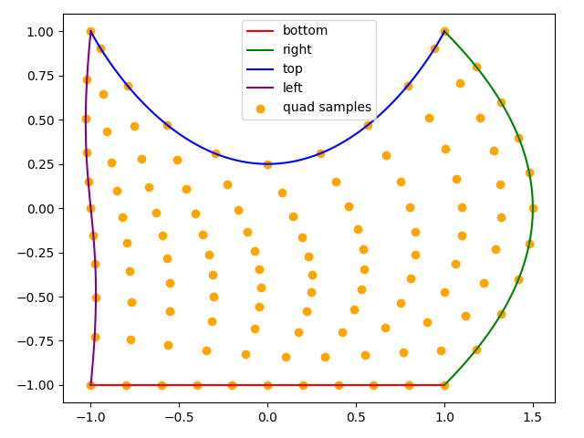

Note
Go to the end to download the full example code.
Domain Examples#
This example demonstrates how different domains look and behave like.
Lines#
Lines are a helper class, which map a 1D reference domain \([-1, +1]\) to an
N-dimensional curve. Line is represented with Bernstein polynomials, so by
inserting more values between the start and end point of the line, additional knots can
be added.
The example bellow shows three lines, which all start and end at the same points, but with a different number of extra knots inserted.
ln1 = Line((-1, -1), (+1, +3))
ln2 = Line((-1, -1), (1, 0), (+1, +3))
ln3 = Line((-1, -1), (-1, -1), (1, 0), (+2, +3), (+1, +3))
fig, ax = plt.subplots()
xplt = np.linspace(-1, +1, 101)
ax.scatter(ln3.knots[:, 0], ln3.knots[:, 1], label="3", color="blue")
ax.scatter(ln2.knots[:, 0], ln2.knots[:, 1], label="2", color="green")
ax.scatter(ln1.knots[:, 0], ln1.knots[:, 1], label="1", color="red")
ax.plot(*ln3.sample(xplt), color="blue")
ax.plot(*ln2.sample(xplt), color="green")
ax.plot(*ln1.sample(xplt), color="red")
ax.legend()
ax.set(aspect="equal")
fig.tight_layout()
plt.show()
Surfaces#
A Quad can be constructed from different lines. A quad can be bounded by lines
of any order, however, each line must begin where the previous one ended and must
together form a closed loop.
The coordinates of the Quad are interpolated between the curves by blending
them. As such, each bounding Line can have a different order.
bottom = Line((-1, -1), (+1, -1))
right = Line((+1, -1), (+2, 0), (+1, +1))
top = Line((+1, +1), (+1, +1), (0, -1), (-1, +1), (-1, +1))
left = Line((-1, +1), (-1.1, 0), (-0.9, 0), (-1, -1))
quad = Quad(bottom, right, top, left)
fig, ax = plt.subplots()
xp, yp = np.meshgrid(np.linspace(-1, +1, 11), np.linspace(-1, +1, 11))
ax.plot(*bottom.sample(xplt), color="red", label="bottom")
ax.plot(*right.sample(xplt), color="green", label="right")
ax.plot(*top.sample(xplt), color="blue", label="top")
ax.plot(*left.sample(xplt), color="purple", label="left")
ax.scatter(*quad.sample(xp, yp), color="orange", label="quad samples")
ax.set(aspect="equal")
ax.legend()
fig.tight_layout()
plt.show()
#
# Sub-regions
# -----------
#
# Domains can be sub-divided into sub-regions. This is done by specifying the
# region of the reference domain to extract. For each dimension, the reference
# domain reaches from -1 to +1, so the slice bellow is :math:`\frac{1}{10}` of
# the width and height of the reference domain.
sub_quad = quad.subregion((-0.3, -0.1), (0.5, 0.7))
fig, ax = plt.subplots()
ax.scatter(*quad.sample(xp, yp), color="red", label="quad samples")
ax.scatter(*sub_quad.sample(xp, yp), color="orange", label="sub-quad samples")
ax.set(aspect="equal")
ax.legend()
fig.tight_layout()
plt.show()
- 

Surfaces#
A Line or Quad may be define in an any dimensional setting, as
long as the space is at least 1D or 2D respectively. As such, it is entirely possible
to define a Quad as 2D surface in 3D space.
btm_part = Line(
(+1, +0, -1),
(+1, +1, -1),
(+0, +1, -1),
(-1, +1, -1),
(-1, +0, -1),
(-1, -1, -1),
(-0, -1, -1),
(+1, -1, -1),
(+1, +0, -1),
)
top_part = Line(
(+1, +0, +1),
(+1, -1, +1),
(-0, -1, +1),
(-1, -1, +1),
(-1, +0, +1),
(-1, +1, +1),
(+0, +1, +1),
(+1, +1, +1),
(+1, +0, +1),
)
stitch = Line(
(+1, +0, +1),
(+1, +0, -1),
)
surf = Quad(top_part, stitch, btm_part, stitch.reverse())
fig = plt.figure()
ax = plt.subplot(projection="3d")
xp, yp = np.meshgrid(np.linspace(-1, +1, 31), np.linspace(-1, +1, 31))
ax.plot_wireframe(*surf.sample(xp, yp))
ax.set(aspect="equal")
plt.show()
It is of course possible to take a subdomain of this surface.
# This takes the half along the first dimension.
sub_surf = surf.subregion((-0.5, +0.5), (-1, +1))
fig = plt.figure()
ax = plt.subplot(projection="3d")
ax.plot_wireframe(*sub_surf.sample(xp, yp))
ax.set(aspect="equal")
plt.show()

Total running time of the script: (0 minutes 0.535 seconds)